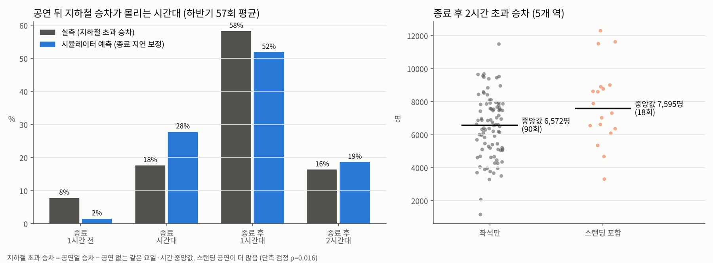
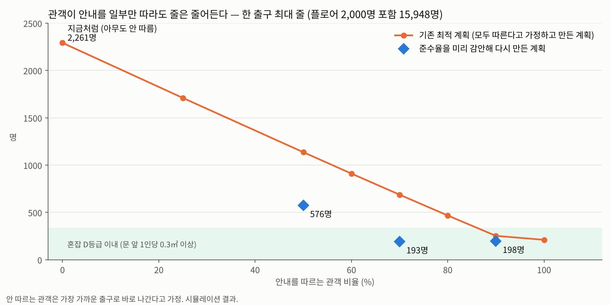

분석 단계
STEP 1
경로망 만들기
평면도를 3D 모델 치수(외곽 반지름 약 63m)로 보정해 52개 구역 → 계단 → 출구 9곳의 경로망을 만들었습니다.
- 출구 문 폭 2.35m, 1분에 약 183명 통과
- 걷는 속도 1.2m/s, 계단 0.6m/s


STEP 2 · 3
시뮬레이션과 검증
관객이 일어나는 시간(중앙값 4분), 걷기, 출구 앞 줄 서기를 5초 단위로 계산하고, 줄 길이로 혼잡 등급(A~F)을 매겼습니다.
2025년 공연 108회의 지하철 승차 급증 시간과 비교해 맞춘 결과, 혼잡 시간대 적중률이 14% → 79%로 올라갔습니다.

STEP 4
시차 퇴장 최적화 (MILP)
구역마다 "어느 출구로, 몇 분 뒤에"를 정해 출구 줄 대기와 걷는 거리를 함께 최소화했습니다.
- 38개 구역은 바로, 11개 구역은 2분 뒤, 3개 구역은 4분 뒤 출발
- 24개 구역은 더 한가한 출구로 변경
- 새 조건에서도 3초 안에 다시 계산

STEP 5
조건이 달라져도 버티는지
플로어 관객 0·2,000·4,000명과 관객이 일어나는 속도를 바꾼 9가지 조건 모두에서 최대 대기가 크게 줄었습니다.
관객 일부만 안내를 따르는 경우도 계산했습니다. 준수율 70%를 가정한 계획은 최대 대기 193명으로, 100% 따를 때(211명)와 비슷합니다.

STEP 6
관객 규모 예측
공연 정보·요일·날씨·공휴일 16개 변수로 공연 후 지하철 승차(관객 규모 대리 지표)를 예측했습니다. 평균 오차 1,327명(24.4%)으로, 공연 전에 오늘 조건에 맞는 계획을 미리 고를 수 있습니다.